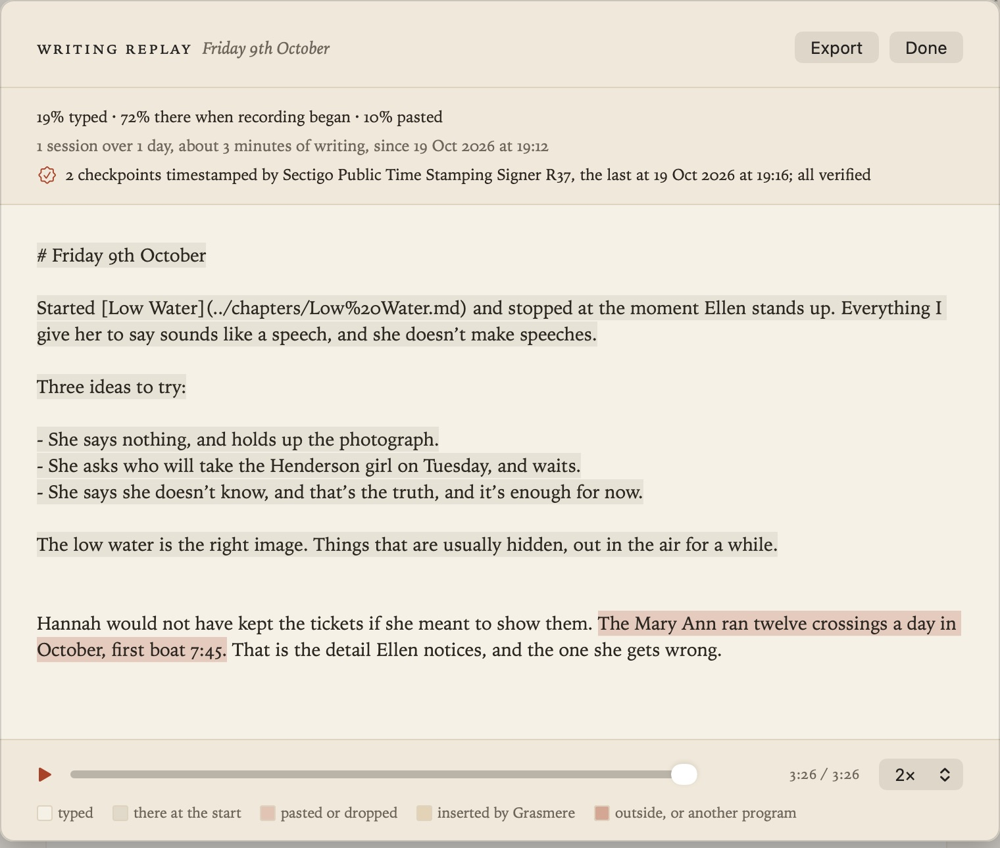

Writing Replay
New in 1.1. An experimental feature: Grasmere can keep a record of how a document is written, and play it back, so you can show someone that a piece of writing was written rather than pasted, and when. It’s off until you turn it on in Settings ▸ General ▸ Writing replay.
Recording a document
With the feature on, choose File ▸ Record This Document’s Writing with the document open. A small red dot appears beside the document’s name in the running head while it’s recording. From then on, Grasmere keeps a record of every change to the document’s text, and how it arrived:
- typed at the keyboard, grouped into words
- pasted or dropped in
- inserted by Grasmere (a link from ⌘K, a task box, a saved answer)
- changed outside Grasmere (another app, sync, git), picked up when Grasmere next reads the file
- sent by another program, for keystrokes that didn’t come from the keyboard itself
Text that was already in the document when recording began counts as there at the start. Recording is per document: other documents aren’t touched, and opening another document doesn’t stop it; the dot is shown on the document being recorded. Choose Record Writing again to stop; the record is kept, and covers what was written up to then. You can go on editing the document afterwards, and the replay says so. File ▸ Delete This Document’s Writing Record removes it.
The record is kept on your Mac, in Grasmere’s own storage beside the project’s other app data, never in the document, which stays a plain Markdown file. It follows the document if you rename or move it in Grasmere, and goes when the document is deleted or merged away.
Timestamps
A record on its own is only the writer’s word, so Grasmere fixes it in time as you go. A minute after you stop typing, when you close the document, and when you quit, it makes a checkpoint: a hash of the record so far. The hash is sent to a public timestamp service, which signs it with the time (RFC 3161, the standard used for signing software). Only the hash goes out, never any text; the service does see your Mac’s internet address and when you write. The receipt is kept with the record.
Because each checkpoint is chained to the ones before, a record can’t be rewritten afterwards without the stamps failing, and a record made up later can’t have stamps from the past. The service is Sectigo’s by default; Settings ▸ General ▸ Writing replay takes another RFC 3161 address. Offline, checkpoints wait and are stamped when you’re next connected.
Playing it back
File ▸ This Document’s Writing Replay plays the record: press play, scrub, or change the speed. Long pauses are shortened. Each part of the text is shaded by where it came from, and the top of the sheet says how much was typed, how many sessions over how many days, and whether the record checks out: every entry fits, every checkpoint matches, and every timestamp’s signature is verified against your Mac’s certificate store.

Sharing
Export in the sheet writes the replay as a single web page that plays in any browser, with nothing to install. Before it does, it reminds you what the page shows: everything written and deleted in the document since recording began, including text that isn’t in the final document, and when. Share it only with people you want to see all of that. The page says whether the record checked out in Grasmere when it was exported; a browser can replay the text but can’t check certificates itself.
What it shows, and what it can’t
A replay shows how text got into Grasmere and when. It can tell typing from pasting, from Grasmere’s own insertions, from changes made elsewhere, and from keystrokes another program sent. It can’t tell text composed at the keyboard from text retyped by hand from somewhere else, though copying tends to look different from composing: steady, with few second thoughts. A missing or broken record means only that nothing can be shown, not that anything is wrong.